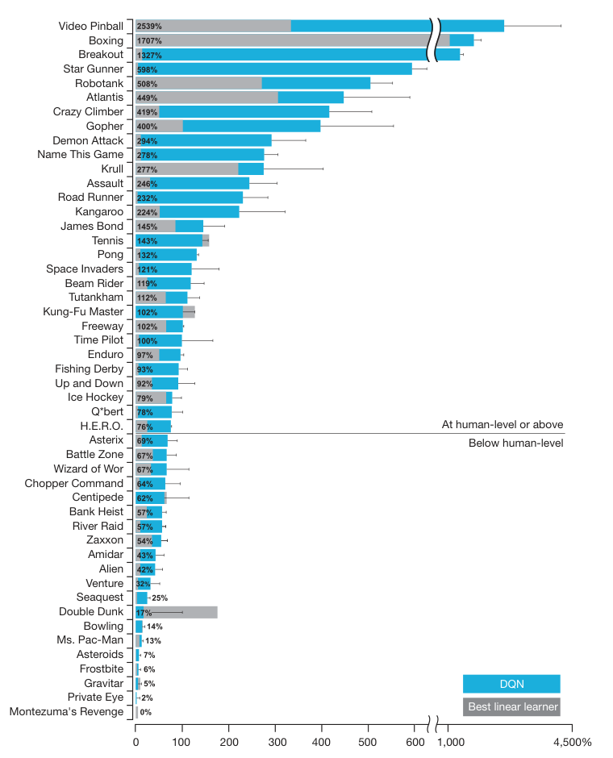
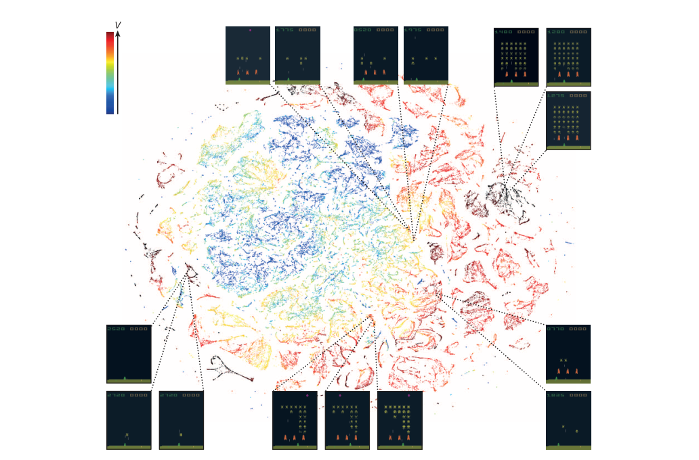

Two fixes turned a diverging network into a 49-game Atari player
Mnih and colleagues stabilized deep Q-learning with experience replay and a frozen target network, and the reproducibility work that followed left the honest 29-of-49 result standing while exposing how much the aggregate “human-level” label was hiding.
Human-level control through deep reinforcement learning
Read the paperThe theory of reinforcement learning provides a normative account, deeply rooted in psychological and neuroscientific perspectives on animal behaviour, of how agents may optimize their control of an environment. To use reinforcement learning successfully in situations approaching real-world complexity, however, agents are confronted with a difficult task: they must derive efficient representations of the environment from high-dimensional sensory inputs, and use these to generalize past experience to new situations. Remarkably, humans and other animals seem to solve this problem through a harmonious combination of reinforcement learning and hierarchical sensory processing systems, the former evidenced by a wealth of neural data revealing notable parallels between the phasic signals emitted by dopaminergic neurons and temporal difference reinforcement learning algorithms. While reinforcement learning agents have achieved some successes in a variety of domains, their applicability has previously been limited to domains in which useful features can be handcrafted, or to domains with fully observed, low-dimensional state spaces. Here we use recent advances in training deep neural networks to develop a novel artificial agent, termed a deep Q-network, that can learn successful policies directly from high-dimensional sensory inputs using end-to-end reinforcement learning. We tested this agent on the challenging domain of classic Atari 2600 games. We demonstrate that the deep Q-network agent, receiving only the pixels and the game score as inputs, was able to surpass the performance of all previous algorithms and achieve a level comparable to that of a professional human games tester across a set of 49 games, using the same algorithm, network architecture and hyperparameters. This work bridges the divide between high-dimensional sensory inputs and actions, resulting in the first artificial agent that is capable of learning to excel at a diverse array of challenging tasks.1
Why the obvious network diverged
Q-learning tells an agent what a move is worth. For a state s and an action a, the action-value Q^{\pi}(s,a) is the expected discounted return from taking a in s and following the policy \pi thereafter, and the optimal Q^{*} is the best any policy can do. With a small, discrete state space you can store one number per state-action pair and the theory converges. An Atari screen is not a small state space. It is 210 by 160 pixels at every frame, so the table has to become a function, and the natural choice is a convolutional network reading the raw image.1
The moment the table becomes a neural network, the guarantees fall away. Mnih and colleagues state the problem in one flat sentence: reinforcement learning is “known to be unstable or even to diverge when a nonlinear function approximator such as a neural network is used to represent the action-value” function.1 Two features of the setup drive the divergence. Consecutive frames are almost identical, so the gradient updates are heavily correlated and the network chases whatever it saw last. And the same weights that produce a prediction also produce the target that prediction is trained toward, so an update to the network moves its own goalposts. The paper's contribution is not a new objective. It is two devices, experience replay and a separate target network, that make the standard objective trainable.
The error the network descends
The optimal action-value obeys the Bellman optimality equation: the value of a state-action pair is the immediate reward plus the discounted value of acting optimally from the next state.
Q-learning turns that identity into an update. It does not know Q^{*}, so it bootstraps: it treats its own current estimate of the best next action as a stand-in for the truth and nudges the prediction toward it. The quantity it nudges is the temporal-difference error, the gap between what the network predicted for the action it took and the reward-plus-discounted-value it observed one step later.
The network is trained to make \delta small on the transitions it has lived through, by descending the squared error below.
- Q(s,a;\theta)The online network's value for the action actually taken. This is the only term being trained; \theta are the live weights.
- rThe reward, clipped to [-1,1] so a game scoring in the thousands does not dominate one scoring in single digits.
- \gammaThe discount, set to 0.99, weighting future reward against present reward.
- \max_{a'} Q(s',a';\theta^{-})The bootstrapped target: the best action value in the next state, read from the frozen weights \theta^{-}, not the live ones.
- (s,a,r,s')\sim U(D)A transition sampled uniformly at random from the replay memory D, not the transition just experienced.
The two colored choices at the right of the loss are the whole argument. The target is read from \theta^{-}, a frozen copy of the weights, and the transition is drawn from a stored memory rather than the live stream. Everything else is ordinary regression. In practice the error itself is clipped to [-1,1], which turns the squared loss into a Huber loss and keeps a single surprising transition from producing a destabilizing gradient.1
How replay and a frozen target buy stability
Experience replay attacks the correlation. Every transition the agent sees is written into a memory of the last million frames, and each gradient step samples a minibatch of 32 uniformly from that memory. A single frame can be reused in many updates, and consecutive frames rarely land in the same batch, so the network trains on a smoothed, shuffled distribution instead of the tightly correlated sequence it is living through.1
The target network attacks the moving-goalpost problem. The frozen weights \theta^{-} are a snapshot of the online weights, cloned into a second network every C steps and held fixed in between. Every target in the loss is computed from that snapshot, so an update to the live network cannot immediately drag its own targets along with it. The paper's own summary is that this delay makes “divergence or oscillations much more unlikely.”1 The 2013 workshop version that first learned Atari from pixels already had replay, but it had no separately maintained target network; it held the previous iteration's weights fixed only within an iteration. The Nature paper's additions over that precursor are exactly the ones that bought stability at scale: the periodically cloned target network, reward and error clipping, a larger network, and the jump from seven games to 49.2
How much does each device buy? The paper answers with an ablation that trains the agent under all four on-off combinations of the two devices. The effect is not marginal. On Breakout, the full agent scores 316.8; strip out the target network and it falls to 240.7; strip out replay and it collapses to 10.2; remove both and it manages 3.2, roughly a hundredth of the full score.
| Game | Replay + target | Replay only | Target only | Neither |
|---|---|---|---|---|
| Breakout | 316.8 | 240.7 | 10.2 | 3.2 |
| Enduro | 1 006.3 | 831.4 | 141.9 | 29.1 |
| River Raid | 7 446.6 | 4 102.8 | 2 867.7 | 1 453.0 |
| Seaquest | 2 894.4 | 822.6 | 1 003.0 | 275.8 |
| Space Invaders | 1 088.9 | 826.3 | 373.2 | 302.0 |
The grid was run for ten million frames rather than the fifty million of the headline results, so the absolute numbers are not the ones Figure 3 reports; the point is the direction across columns, and it is unambiguous. The two devices are not tuning knobs. Without them the same network and the same loss barely learn Breakout at all.
What 49 games actually showed
The single agent was trained separately on each of 49 Atari games, with one architecture and one hyperparameter set held fixed across all of them, receiving only the pixels and the score. It beat the best prior reinforcement-learning methods, which relied on hand-designed features, on 43 of the 49 games.1
The word doing the most work in the abstract is “comparable.” The paper makes it precise. Each game's score is normalized so that a random player sits at 0% and a professional human games tester, given about two hours of practice, sits at 100%. The paper's operational bar for human-level is 75% of that human score, and the agent clears it on 29 of the 49 games.1 That normalization scheme, and the benchmark itself, come from the Arcade Learning Environment, whose authors proposed reporting scores this way and stocked the platform with dozens of games precisely so no single title could define success.3

Figure 3 is the honest version of the headline, because it refuses to average. Read top to bottom, it is a single sorted column of all 49 games, and the spread is enormous. Video Pinball lands at 2,539% of the human score and Breakout at 1,327%. Below the human-level line the agent falls to Montezuma's Revenge at essentially 0%. In that game the rewards are so sparse, and so far from the actions that earn them, that bootstrapping from pixels has nothing to climb. “Human-level control” is a claim about where the top of this column sits. It is not a claim about the bottom, and the figure never lets you forget the bottom is there.
Inside the last hidden layer
Scores show that the agent acts well. They do not show what it learned to see. For that the paper reaches into the 512-unit last hidden layer, the representation the output values are read from, and projects it to two dimensions with t-SNE while the agent plays Space Invaders. Each point is one game state; its color is the value the network assigns that state, from dark blue for low to dark red for high.1

The map settles a question the scores cannot. A network could in principle score well while representing states by surface appearance, memorizing which pixel patterns paid off. This one does not. A near-full screen and a completely full screen look quite different in pixels, yet the network places them together and paints them the same value, because both stand one clearing away from a reward. Screens that resemble each other but sit at different points in a round are pushed apart. The representation is organized by expected value, which is what the loss was asking it to encode, and the embedding is the paper's direct evidence that the asking worked.
Where the later studies land
The two halves of the claim came apart under different pressures. The operational claim, 29 of 49 games at or above 75% of a human, faced one direct objection: Atari is deterministic, so perhaps the agent memorized a winning sequence of button presses rather than learning to play. Machado and colleagues built the test for that. They inject stochasticity the agent cannot memorize around, repeating its previous action with probability 0.25 on each step. A pure memorizing planner then collapses, while learning agents such as DQN barely move. The sticky-actions result lands on the deterministic benchmark and on planners that exploit it; for DQN it is closer to a vindication than a rebuttal.4
The weaker protocol was flagged before DQN existed. The Arcade Learning Environment's own authors warned that it is “poor experimental practice to both train and evaluate an algorithm on the same data set,” and recommended tuning on a handful of games and testing on unseen ones. DQN did not adopt that split; it trained and reported on the same 49 games, tuning on five of them.3 The aggregate summary is the part that has aged worst. Agarwal and colleagues show that the mean and median human-normalized scores the field reports, DQN's lineage included, are unreliable when computed from a handful of runs. The median “only depends on the performance ordering across tasks and not on the magnitude,” so zero scores on nearly half the games need not move it. Their remedy is the interquartile mean with bootstrap confidence intervals. The critique is aimed at the metric practice. Its deep case study is the sample-efficient Atari 100k regime and later algorithms, not a re-run of the original agent. But the phrasing its argument undermines is exactly the aggregate “human-level across 49 games.”5
Two further studies bracket the result without touching its headline. Henderson and colleagues document how far deep-RL scores swing with the random seed, the network size, and even the choice of public codebase. But they measure continuous-control policy-gradient methods on MuJoCo, not Atari and not DQN. Their bearing here is an analogy about fragility, not a re-test.6 Van Hasselt and colleagues do test DQN's exact algorithm. The single \max in the target uses one network to both pick and score the next action, which “makes it more likely to select overestimated values,” a bias they observe in all 49 games. Their fix decouples the two roles in one line and keeps DQN's replay and target network intact.7 The one device the paper itself called replaceable was replay's uniform sampling. Prioritized experience replay samples in proportion to the temporal-difference error instead. It is the improvement Mnih and colleagues had anticipated when they noted a better strategy “might emphasize transitions from which we can learn the most.”8
| Study | What it re-examined | Which DQN claim it touches |
|---|---|---|
| Machado4 | Atari determinism, via sticky actions. | The 29-of-49 result. Supports it: a memorizer collapses, DQN holds. |
| Bellemare3 | Training and testing on the same games. | The evaluation protocol, flagged before DQN existed. |
| Agarwal5 | Aggregate scores from few runs. | The aggregate “human-level” summary. Recasts it as fragile. |
| Henderson6 | Seed and codebase sensitivity on MuJoCo. | Deep-RL reliability in general, by analogy only. |
| van Hasselt7 | The max operator in the target. | The value estimates, overestimated in all 49. Refines the algorithm. |
| Schaul8 | Uniform sampling from replay. | The one device the paper called replaceable. Improves it. |
What the after-record left of “human-level”
Sort the studies by the claim they touch and the result stops being paradoxical. DQN carried two claims that the abstract runs together. One is operational and narrow: from raw pixels and one hyperparameter set, a single network reached at least 75% of a professional human on 29 of 49 games. The other is the aggregate slogan, human-level control across the set. The narrow claim survived every direct test, including the stochasticity that breaks a memorizer. The slogan is the casualty. Figure 3 was already telling on it before any follow-up arrived: a mean taken across a column running from 2,539% to 0% describes a spread, not a level the agent reached everywhere.
The central result holds. A single architecture, learning from pixels and score, reaching 75% of a human on 29 of 49 games, survives added stochasticity and stands unchallenged. The two stability devices became the foundation the whole lineage builds on, refined by double Q-learning and prioritized replay rather than replaced.1 What does not survive is the aggregate “human-level across 49 games” as a single number: it averages a spread from 2,539% to 0%, and later work showed such aggregates are unreliable from a handful of runs. The assessment would change if a modern re-run under sticky actions and multi-seed reporting moved the 29-of-49 count itself, which no study in this record has done.4
Sources
- Nature · Mnih et al., “Human-level control through deep reinforcement learning” (2015)
- arXiv · Mnih et al., “Playing Atari with Deep Reinforcement Learning” (2013)
- JAIR · Bellemare et al., “The Arcade Learning Environment: An Evaluation Platform for General Agents” (2013)
- arXiv · Machado et al., “Revisiting the Arcade Learning Environment” (2018)
- arXiv · Agarwal et al., “Deep Reinforcement Learning at the Edge of the Statistical Precipice” (2021)
- arXiv · Henderson et al., “Deep Reinforcement Learning that Matters” (2018)
- arXiv · van Hasselt, Guez & Silver, “Deep Reinforcement Learning with Double Q-learning” (2016)
- arXiv · Schaul et al., “Prioritized Experience Replay” (2016)